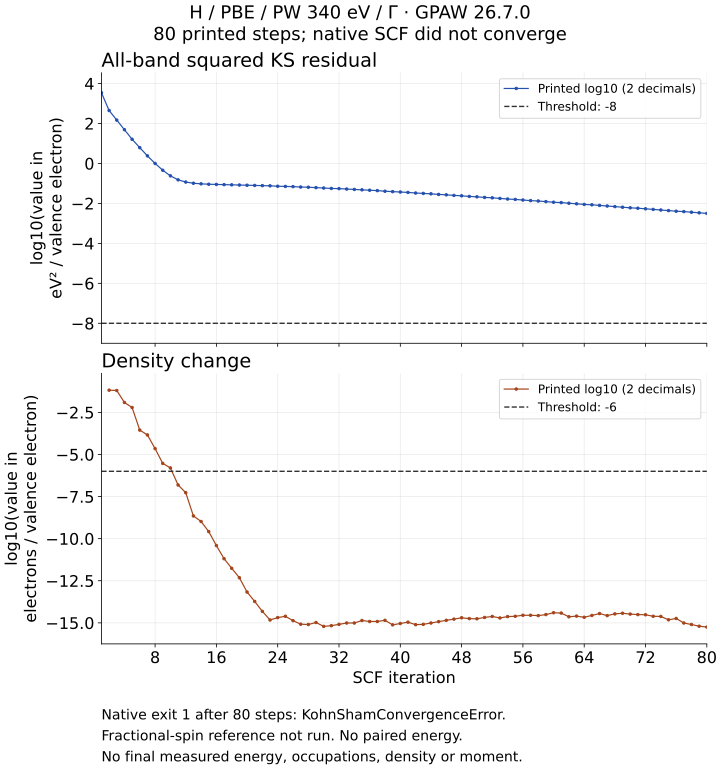

能量稳定，为什么 SCF 仍未收敛？
下面是一个中性 H 原子受约束双重态的真实 80 步 SCF 轨迹。打印外推总能量很快停止可见变化，密度判据也随后通过；但波函数是否满足 Kohn–Sham 方程，需要单独检查本征态残差。三个判据的合取未成立，程序在第 80 步以 KohnShamConvergenceError 退出（exit 1），分数自旋参考没有执行。
这是一份未收敛轨迹。没有成功返回的总能量、占据、最终密度或测得的磁矩，也没有完整双重态/分数自旋配对结果；它不能给出配对能差、铁磁或交换结论、孤立原子精度。此页只帮助读取保存日志。
先分别看两个残差

选择一步，核对原始标记
c 保留原生日志的对应判据标记，不能从舍入 token 重新猜测。能量从第 7 步、密度从第 11 步持续带 c；本征态 80 步都没有 c。能量列是打印的外推总能量（eV），不是能量残差，也不是精确返回能量。能量 c 来自内部三值峰峰变化判据，不能用六位小数显示恢复精确能量差。
第80步本征态 log10=−2.50，约为 3.16×10⁻³ eV²/价电子，仍高于目标 10⁻⁸；这说明实际未满足的判据是本征态残差。10ˣ 只由两位小数打印值近似换算，不是恢复的内部精确值。没有逐能带、逐自旋残差，不能据此认定空带或求解器内迭代是根因；日志的通用建议也不是本次已证实原因。
原始量与固定设置
| 列 / 来源 | 含义与单位 | 保留精度 / 判据 |
|---|---|---|
| energy | 外推总能量 / eV | 6位小数；原生 c 从7 |
| eigenstates | 全部能带平方 KS 残差 / (eV²/价电子) | log10两位小数；目标1e−8 |
| density | 密度变化 / (电子/价电子) | log10两位小数；目标1e−6 |
| magmom | 打印受约束量 / μB | +1.0000，不是最终测量精度 |
GPAW 26.7.0 的旧计算器，ASE 3.29.0、Python 3.12.3、libxc 5.2.3；中性单 H、PBE、周期 6 Å 立方盒、Γ、PW 340 eV、2条能带，spinpol 与固定磁矩 1 μB，零展宽、symmetry off。H PAW 数据 SHA-256：e16130c5eb16325a4404f46be86182a4b0f468038ae5c8ab9ffc777a2993fd1d。这是固定模型的保存观察，未验证盒长、截断或材料精度。
原生日志 gpaw.txt 第209–288行逐字保留为80行原文；CSV的 source_line 对应原始行号，第一步密度空白。26.7.0 scf.py 的 write_iteration规定列顺序和 c；同版本 Energy / Density / Eigenstates定义对应量、归一化与判据。
逐步打印表
| 选择步 | 总能量 / eV | 本征态 log10 | 密度 log10 |
|---|
保存数据重绘与来源说明 · 下载重绘脚本。重绘只读 CSV，不调用科学求解器。